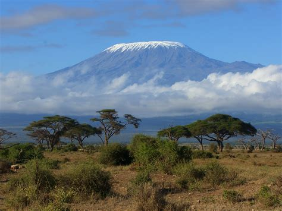
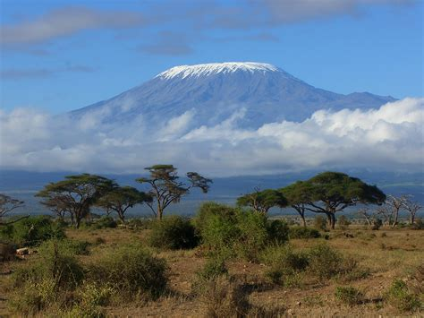

Africa
With exceptional alpine scenery and deep valleys filled with ancient forests, Glacier National Park is a year-round paradise. Scale its heights following trails pioneered by legendary Swiss mountain guides, take a gentle stroll amid moss-draped old-growth cedars or hike through alpine meadows strewn with lichen-covered boulders. After a day’s exploring, sink into an armchair before a roaring fire and steep yourself in the history of Rogers Pass, the final link in the railway that brought Canada together as a nation.
Mount Kilimanjaro
 

Mount Kilimanjaro
The Balu Pass trail starts as a forest walk through a stand of mountain hemlock and occasional huge Englemann spruce. Connaught Creek flows gently by the side of the trail and is an excellent place to see dippers - adventurous dark little birds that hunt for aquatic invertebrates in mountain streams. After about a half-hour you leave the timber behind. The trail constantly crosses the lower portions of avalanche paths up to the end of the valley. The steepest part of the walk is at the end – a short uphill hike to Balu Pass summit. Wild flowers in August and the view of the glaciers, icefields and mountain peaks repay the effort
Book a TripSimien mountains
Simien mountains
The glacier is located south of Mount Sir Donald in the Selkirk Mountains, west of Rogers Pass in British Columbia. The outflow of the glacier forms the headwaters of the Illecillewaet River. The Illecillewaet névé feeds three other glaciers: the Asulkan, Geikie and Deville.
Book a Trip
High Atlas mountains
High Atlas mountains
Writing of this valley in 1905, cartographer and explorer Arthur O. Wheeler described the Asulkan as "a gem of mountain scenery. The valley feels enchanted. There is magic in the atmosphere." Glacier views, mountain scenery, waterfalls and a pleasant valley walk through forests and across avalanche paths combine to make the Asulkan an excellent introduction to this part of the Columbia Mountains. The name "Asulkan" was first used by William Spotswood Green, who climbed in the area in 1888. It reportedly means "wild goat" in the dialect of one of the First Nations of the region, and recognizes the abundance of mountain goats he saw at the end of this valley in Asulkan Pass.
Book a Trip